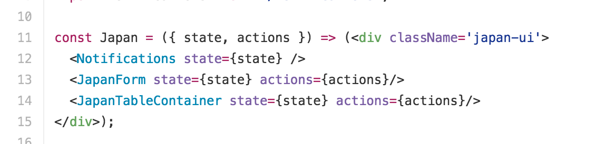
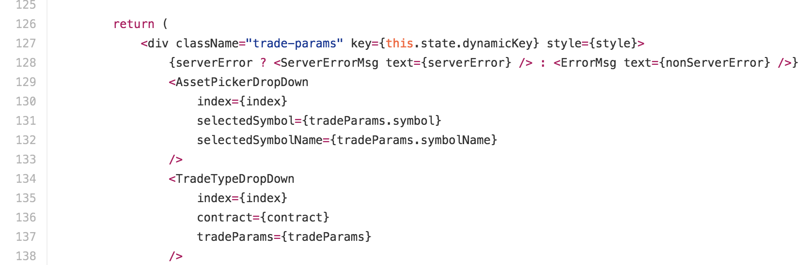
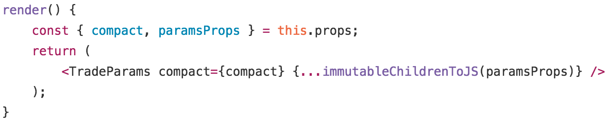
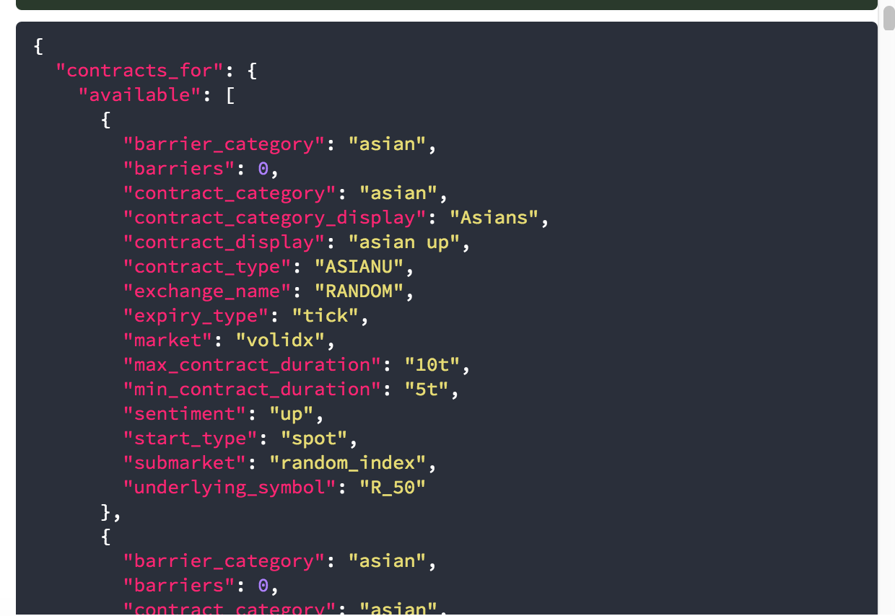
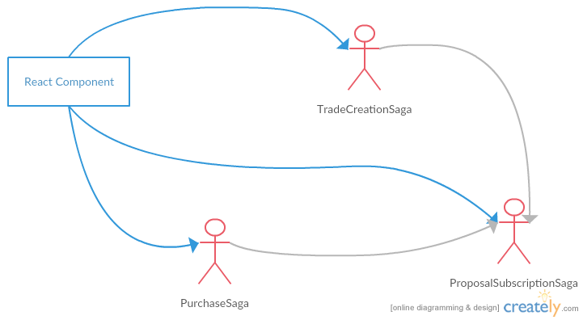

Lesson learnt from Next-gen project
Don't over-modularize
- Binary-next-gen
- Binary-charts
- Binary-utils
- Binary-live-api
- Binary-component
Reusability is only valuable when codes are being reused.
Don't aim a moving target
(Or accept the fact that all estimation will be wrong)
Code sharing come with a cost

Build a domain model using ubiquitous language
A domain model is
Essence of the business that should be deliver by the system
Example
- Asset ? Symbol ? Underlying ?
- Tick ? Spot ?
- Stream ?
- Subscriptions
- Market -> Submarket -> Symbol
Recommend reading:
Domain Driven Design: Tackling Complexity in the Heart of Software

React related
Next-gen from 30,000 ft
About React Props/State
Rule #1 Only pass props that are needed
Bad
Better
- Avoid unnecessary re-render
- Better interface documentation
It's ok to use state
- Intermediate state
- State local to component
About ImmutableJS
Why immutableJS?
An immutable collection library
Do not mix ImmutableJS and VanillaJS !!
About Redux
Q: Should we store everything in Redux?
Only store business state and states required to be shared
- Account info
- Contract info
Store the easiest to use structure in your reducer
Eg. contract_for
What I get
Next-gen from 30,000 ft
Better mental model
Improve overall testability
- Testability of component
- Testability of business logic